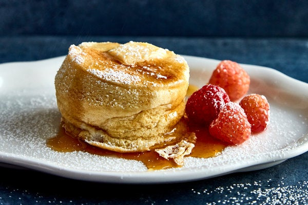

Souffle Pancakes

Impress others with a different take on the classic pancakes!
This fluffy and wobbly pancake recipe is all the rage in Japan! Named Souffle Pancakes for their airy-cloud like texture and the technique used to make them.
Ingredients
What you'll need:
- 4 Large Eggs, separated
- 3 Tbsp of Water, warm temperature
- 2 Tbsp of Butter, melted
- 1/2 Tsp of Vanilla Bean paste or 2 Tsp of Vanilla Extract
- 1/2 Cup Unbleached Cake Flour
- 1 1/4 Tsp of Baking Powder
- 1/4 Tsp plus 1/8 Tsp of Table Salt
- 1/4 Tsp of Cream of Tartar
- 3 Tbsp of Granulated Sugar
Steps
- Use a large nonstick frying pan and set to low temperature. A lid for the pan will be also needed to help speed up the cooking process.
- While the pan is heating up, in a large mixing bowl whisk together the egg yolks, water, butter and vanilla. We will keep the egg whites for later, so hang on to them.
- Add flour and baking powder into the wet mixture and mix until batter is mostly smooth. A few small lumps in the batter is okay. We will set this aside for now, to allow it some time to thicken.
- In another large mixing bowl using an electric mixer, beat the egg whites on medium speed for 1-2 minutes or until foamy.
- Add salt and cream of tartar to the egg whites. Beat again until soft peaks form, then continue to beat while gradually incorporating the sugar. Continue beating until the mixture holds a stiff peak
- Transfer 1/2 cup of the meringe into the egg yolk mixture and gently fold together using a whisk. To create the fluffy and wobbiness of the pancake we need to try to keep as much air as we can while we fold the mixtures together.
- Fold the rest of the meringue into the egg yolk mixture. Once no streaks remain you can stop folding the mixture.
- Cut some parchment paper to fit into the pan and lightly grease the pan and parachment paper.
- Scoop half a cup of the batter into the pan, and place lid over the pancake for about 5-8 minutes. Center of pancake should be jiggly but the pancake should not be wavy or completely set.
- Remove lid and carefully flip the pancake. Cook pancake for another 2-3 minutes with the lid back on.
- Transfer the pancake onto a plate and repeat process until the batter is all used up.
- Serve and enjoy! Toppings of your choice such as fresh fruits, syrups or whip cream may be added. These pancakes are best served immediately as over time they lose their airy texture.
Recipe by Molly Marzalek-Kelly Original Recipe